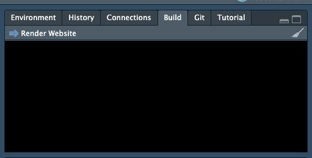
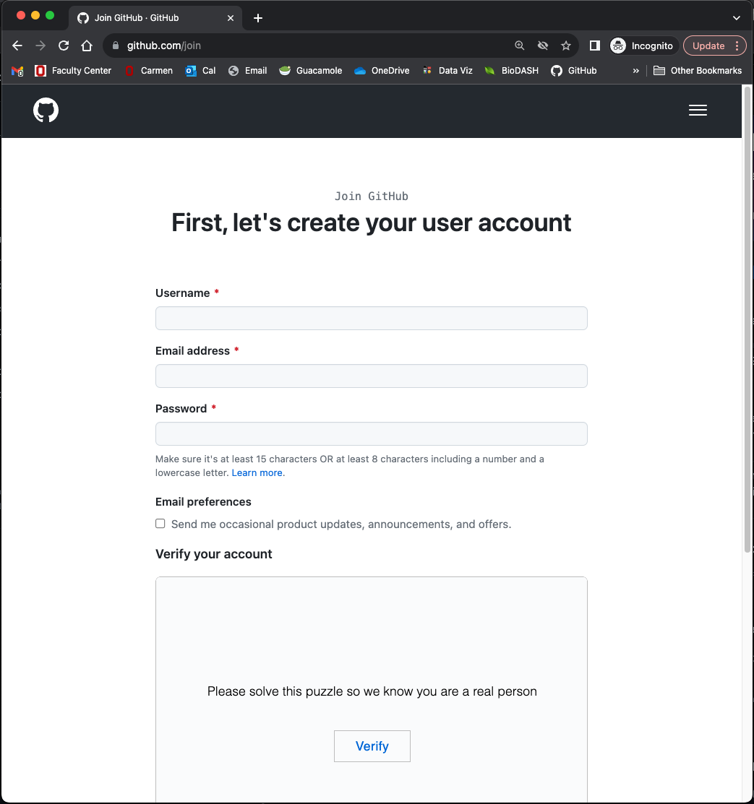
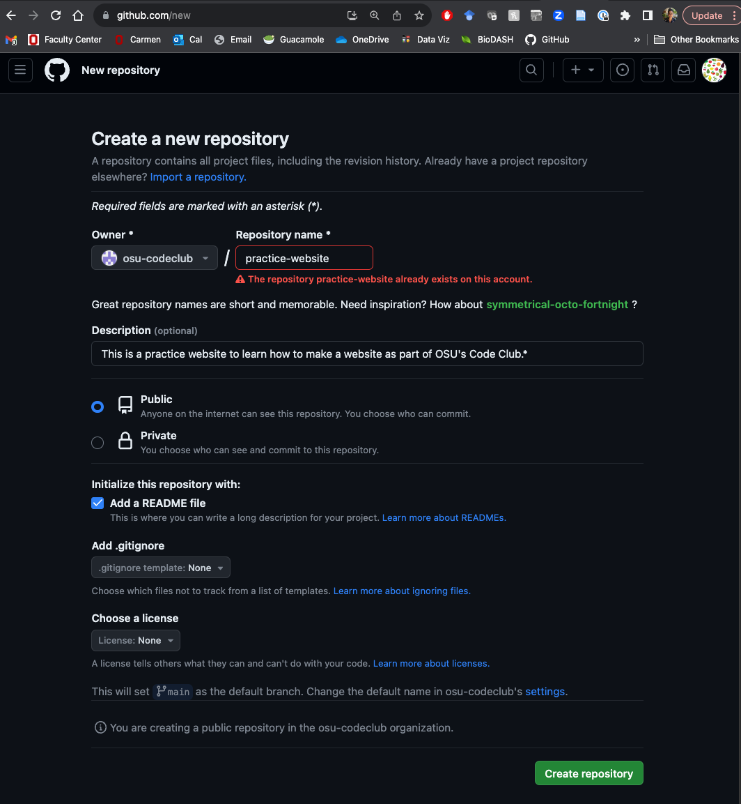
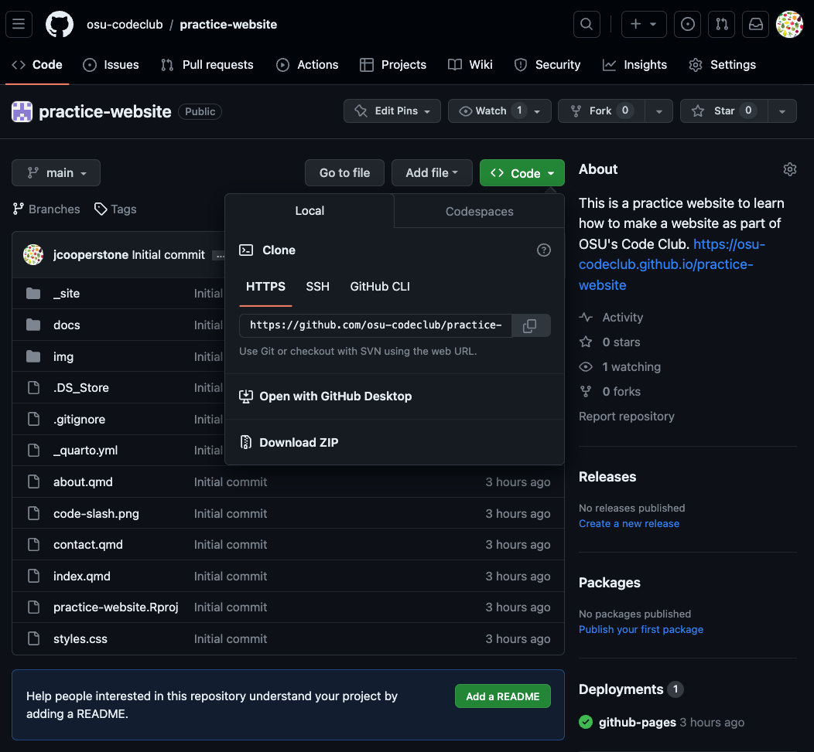
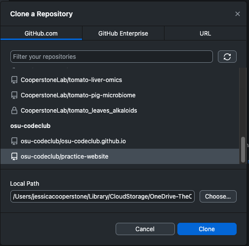
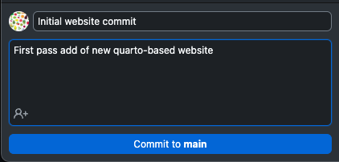
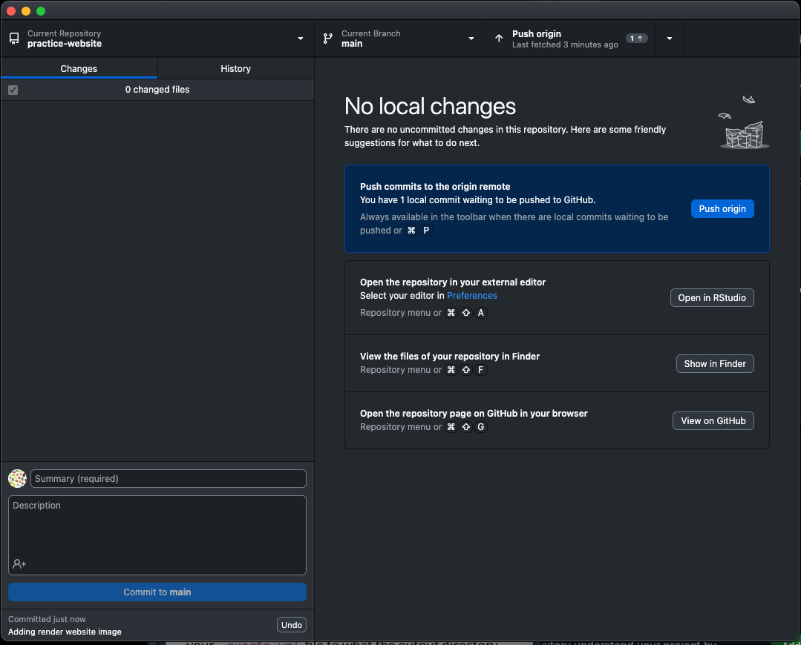
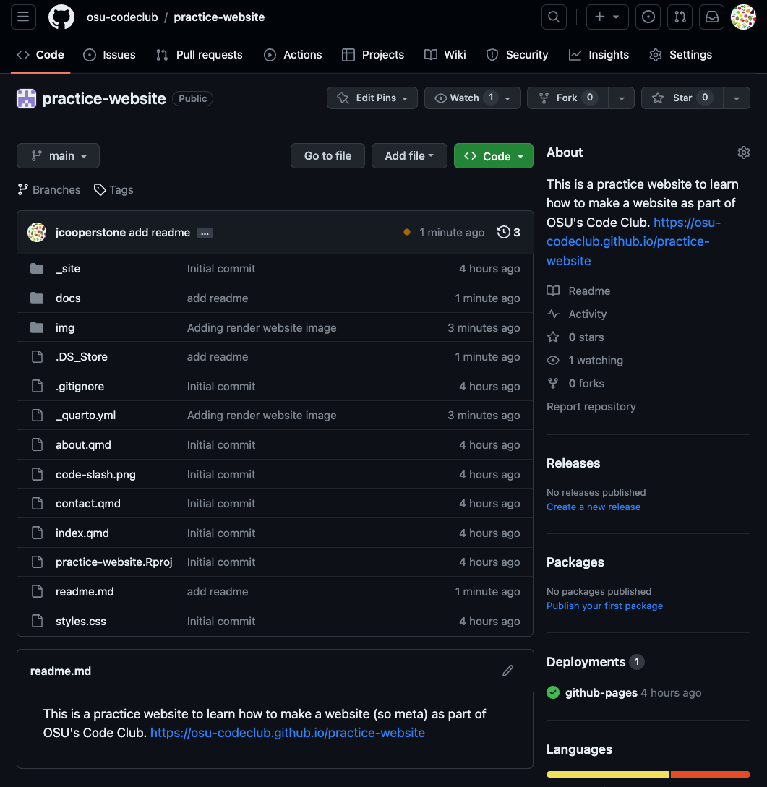
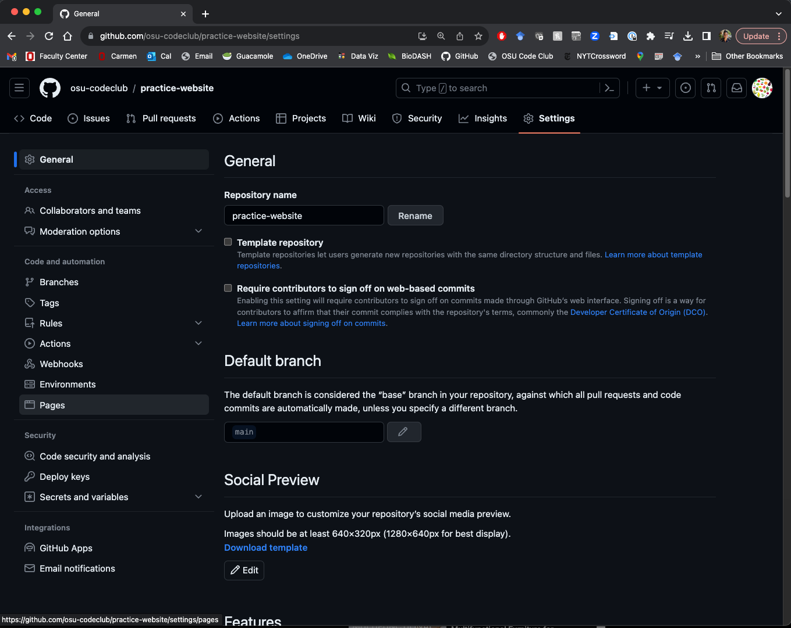
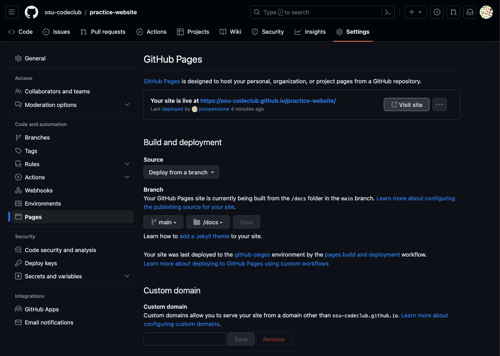

Quarto website 3: Deploying your website with Github
Using GitHub, GitHub Desktop, and GitHub Pages to deploy our website 🤩️.
1 Introduction
We are going to begin this semester’s Code Club with a series on making yourself a website. There are lots of reasons why you might want a website, including to:
- have a web presence about yourself (so when people google you, they can find your relevant info)
- have a blog where you post about whatever it is you want to post about
- share your research or data
So far, we have already gone through:
- How to initiate your site
- How to add content
- How to customize its look
Today, we are going to take our website live, with the help of GitHub, Github Desktop, and Github Pages.
1.1 What is GitHub?
1.2 What is GitHub Pages?
1.3 What is GitHub Desktop?
2 Set output directory in YAML to docs
The first thing we want to do, is make a change in your _quarto.yml file to what the output directory of the site is, so it is more compatible with GitHub Pages.
Go into your _quarto.yml and under project:, set output-dir: docs, like this:
---
project:
type: website
output-dir: docs
---What this does is change where the compiled website goes.
There are three different ways you can publish Quarto websites to GitHub pages, but the one I am going over here is the simplest.
Be sure to build you page now by going to the Build tab in the top right quadrant, and click Render Website.

3 Download Git
If you don’t already have Git, download it: https://git-scm.com/downloads.
4 Create a GitHub account
In order to connect have your site hosted with GitHub and GitHub Pages, you need a GitHub account.
Create a GitHub account by going to github.com/join.

You will have to pick a username - remember that other people will see that username so use one you’d feel comfortable with other people seeing. Here is some advice for picking a username.
5 Download GitHub Desktop and link it to your account
We are going to interface with GitHub via Github Desktop because I think this is the easiest way to do it. It is definitely not the only way.
First download GitHub Desktop: https://desktop.github.com/
Open GitHub Desktop and log into your GitHub account.
6 Create your website repository on GitHub.com
We are going to create the repository that will house our website on GitHub using our web browser. Open up a browser and navigate to https://github.com/new. Be sure you are logged in.
You will need to:
- indicate a repository name - this will be the suffix on your website (mine says it is taken since I had already made the website when I took this screenshot - it will not be this way for you)
- provide a description of the repo so someone can know what it contains
- make your repo public
- add a readme

I will skip adding the gitignore (a document that tells git which files to ignore when you deploy) and the license but you can add these if you want. Then click the green button at the bottom to Create repository.
Once you have done this you will now have a repo where you can put your website.
7 Clone your repository in GitHub Desktop
Now we are going to link this repo with GitHub Desktop.
In your newly created repo on the GitHub web portal click on the green Code button to copy the HTTPS link to your repo.

With this link in your clipboard, open up GitHub Desktop and go to File > Clone Repository.
Click the refresh button on the side, and select your newly created repo, and where you want this directory to be. I am going to put this folder inside the directory of my original website, to make copying files over later easy.

8 Move the files from your website project into your new directory
Open up your Finder or Windows Explorer on your computer and navigate to where you have your website directory/new repo. Copy all of the files from your original website directory except for your .Rproj and paste them into your repo directory. You should now have all your files together and we will be ready to commit and then push them to GitHub.
9 Commit and push your website to GitHub
Go back to GitHub desktop at click the refresh button on the top middle. You should see a bunch of files (all those that comprise your website) under Changes in the tab on the left side.
We are going to now commit our files by entering a comment on what we are doing in the bottom left of GitHub desktop, and then press Commit to main.

Once you’ve done that, click Push origin in the top right.

Nice! Now we should be able to see our website in our GitHub repo. Navigate there in your browser and check. The website files should be there.

10 Set GitHub Pages to deploy from docs
The last thing we need to do to get our website to render is to change some settings for GitHub Pages.
In your repo, click on the Settings button in the top right of the page. Then click on the Pages tab on the left. Under Branch, we want to set our page to build from main, and then from the /docs folder. Then click Save.

Refresh your page and you should now be able to visit your site! There will be a link at the top of the page. You did it!! Check out your new site.
